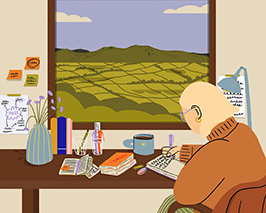
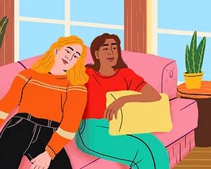
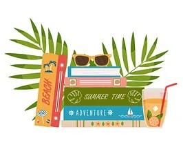

blog
-

Mi experiencia en la feria del libro
Cada año espero con entusiasmo la llegada de la Feria del Libro, pero esta vez fue especial. Tal vez porque fui con más tiempo, con menos expectativas, o simplemente porque necesitaba reconectar con ese lugar donde las historias viven antes de ser contadas. Desde que entré, el bullicio de los pasillos, el olor a papel nuevo y viejo, y la mezcla de voces —algunas contando tramas, otras recomendando autores— me envolvieron como si hubiera entrado en un universo paralelo. Más que una feria, parecía una ciudad hecha de libros, donde cada stand era una puerta a otro mundo.
-

Libros que me cambiaron la vida (y quizás también cambien la tuya)
Hay libros que simplemente disfrutás leer, y hay otros que te marcan. Que te acompañan durante años, que te hacen pensar distinto, tomar decisiones o entenderte mejor. En este post quiero compartir algunos de esos libros que, de una forma u otra, dejaron una huella en mí. No todos son perfectos ni “obras maestras”, pero llegaron en el momento justo. Y a veces, eso es todo lo que un libro necesita para transformarse en inolvidable.
-

Cómo elijo qué leer: entre la intuición y el algoritmo
Con tantos libros allá afuera, a veces elegir qué leer es una tarea más difícil de lo que parece. ¿Voy por el que me recomendaron? ¿Por el que está de moda en redes? ¿O ese que me mira desde la estantería hace meses? En este post te cuento mi proceso para elegir mi próxima lectura: un mix entre intuición, recomendaciones, estados de ánimo y, sí, un poco de ayuda de Goodreads y TikTok. Porque a veces el mejor libro llega cuando dejás de buscarlo tanto.